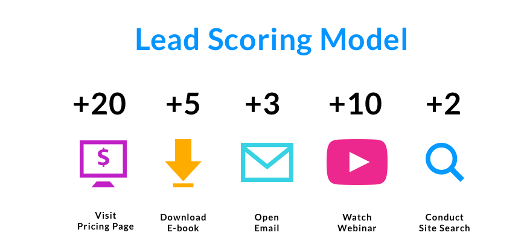
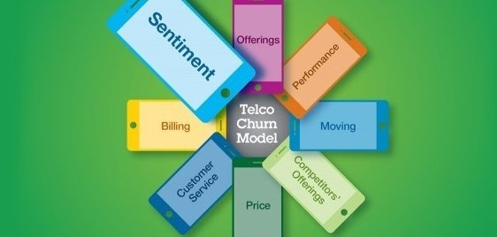
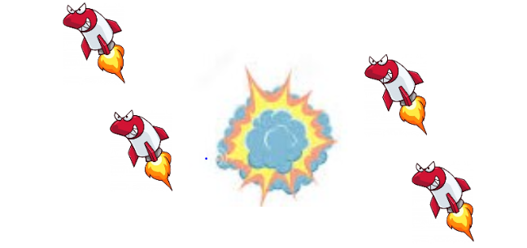

ABOUT ME
"The nature of this portfolio is that it's always a WORK IN PROGRESS........."
I'm shruthi, a multidisciplinary creative proffesional from Bengaluru, Currently working as a Teacher Mentor and Kids coding expert at Whitehat Jr, I am a mentor who trains and supports the new teachers in the platform and also i teach programming to various kids across the globe on creating games and applications. An adaptable professional with overall three plus years experience in case management,customer handling, upselling,end-user support,teaching and mentoring.
I enjoy a good cup of coffee or a chocolate tea and also like to spend most of my time watching DIY's on pinterest and trying it out. I'm a bharathanatayam dancer who loves to explore new classical dance forms and participate in dance events. Love taking intiatives and co-ordinating events, I've always been fascinated by event management works and creative ideas right from decors to UI desgins.
Email: shruthi.ns0221@gmail.com
Contact No: 7829533086
Linkedin: https://www.linkedin.com/in/shruthi96/
Github: https://github.com/shruthi2196
WHAT I'M GOOD AT
Customer Handling & End-User Support
One plus years of experience in handling the global customers in case creation, resolving their
technical queries with customer satisfaction as a major metric.
Proven experience at Dell technologies as a Dell certified technician for hardware and software support
on its laptops,desktops & printers.Experience in upselling the dell products, convinicing and converting
the customers to potential leads who can enroll for the course at Whitehat jr to achieve the best converstion rate.
Tools/Languages: SFDC
Teaching & Mentoring
Hosting & co-ordinating events during my under graduation helped me to lose stage fear and communicate with confidence. Have more than one plus years of experience in teaching computer science and programming to engineering students,7-10 grade kids across the globe. Trained new teachers who joined the organisation on how to improve their trial converstions and paid curriculum queries.Have completed 1500 plus classes and mentoring 10 plus new teachers at whitehat jr.
Reports, Follow ups & Presentations
I'm more of a data and desgin loving person who loves creating and exploring new desgins to create informative
and noticable reports,dashboards & presentations.Proven experience in carrying out every task at its best
with proper follow ups and reports.Played primary role to create presentations and summary in data science
group case studies to represent the analysis that was carried out in the project.
Tools/Languages: MS Office, Tableau
Development & Analysis
"Formal education will make you a living; self-education will make you fortune"
Started to learn developing games, applications in order to earn my bread & butter which turned
out to create interest in the field of development and coding. Created some games and applications
using JavaScript and React native. Worked on some data science projects as a part of my curriculum
during my post graduation which helped me to enhance skills in python programming for data analysis.
Created this portfolio by self learning which helped to me enhance skills in html,css and bootstrap.
Tools/Languages: JavaScript, Python for analysis, HTML, CSS, Bootstrap, React Native
DATA SCIENCE
These were some of the projects that was created during my post garduation diploma in data science using python programming for analysis including the capstone project which uses various libraries like numpys, pandas, matplotlib, seaborn and some data science models like linear, logistic regression, advanced regression models etc....
Capstone Project: Credit Card Fraud Detection
Goal:To predict credit card transactions with the help of machine learning model.
Source: Data taken from kaggle
Models Built: Logistic Regression, Random Forest, XG Boost,Balancing/Oversampling, SMOTE and ADASYN.
Metric: Recall
GDP Analysis
Goal:To help the CMs focus on areas that will foster economic development
for their respective states.
Source: Data taken from https://data.gov.in/
Key Learning: Data Visualisation using seaborn and matplotlib.
Metric: GDP

A case study on credit EDA
Goal:To identify patterns which indicate if a client has difficulty paying their instalments which may be used for taking actions such as denying the loan,
reducing the amount of loan, lending at high interest.
Source: Data provided by university
Key Learning:Exploratory analysis of data
Metric: Target

Prediction of car pricing
Goal:To model the price of cars with the available independent variables for management to understand how exactly the prices vary
with the independent variables.So the model will help management to understand the pricing dynamics of a new market.
Source: Data provided by university
Model Built: Linear Regression
Metric: R Square score

Case study on Lead Scoring
Goal:To build a logistic regression model to assign a lead score between 0 and 100 to each of the leads which
can be used by the company to target potential leads.
Source: Data provided by university
Model Built: Logistic Regression with 92% accuracy.
Metric: Total Number of visits

Case Study on telecom churn
Goal:To analyse customer-level data of a leading telecom firm, build predictive models to identify customers at high
risk of churn and identify the main indicators of churn.
Source: Data provided by university
Models Built: Logistic Regressions and Tree Models
Metric: Evaluation
DEVELOPMENT
Have created 100+ projects in collabration with my students. These are some of the projects that were created using javascript and react native. It uses libraries like p5.js, dom.min.js, p5.play.js, matter.js...
Galaxy Runner
A simple infinite runner game that works on all the touch screen devices, desktops
and monitors, It uses js libraries like p5.js,p5.play.js.

SpaceShip Protector
A simple logic game built which uses the basic concepts of Javascript which can be played only on PC. Find the logic and protect the spaceship :-)
Weather App
Scan the code to open the Weather app. A simple native application built using json api and basic react native components.